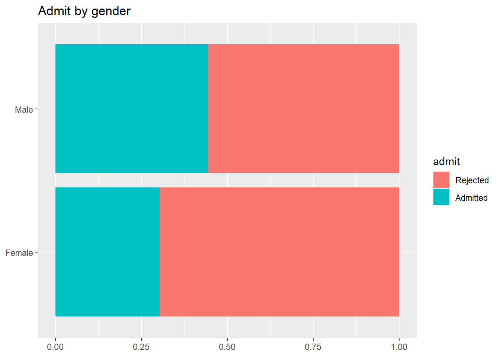
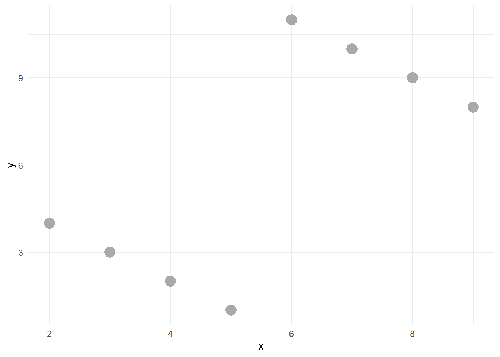
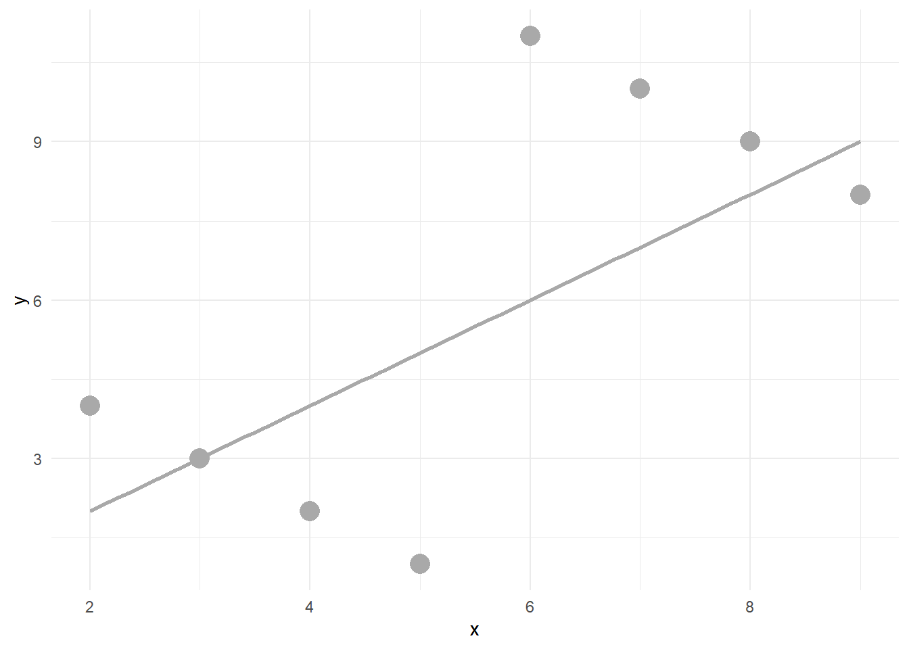
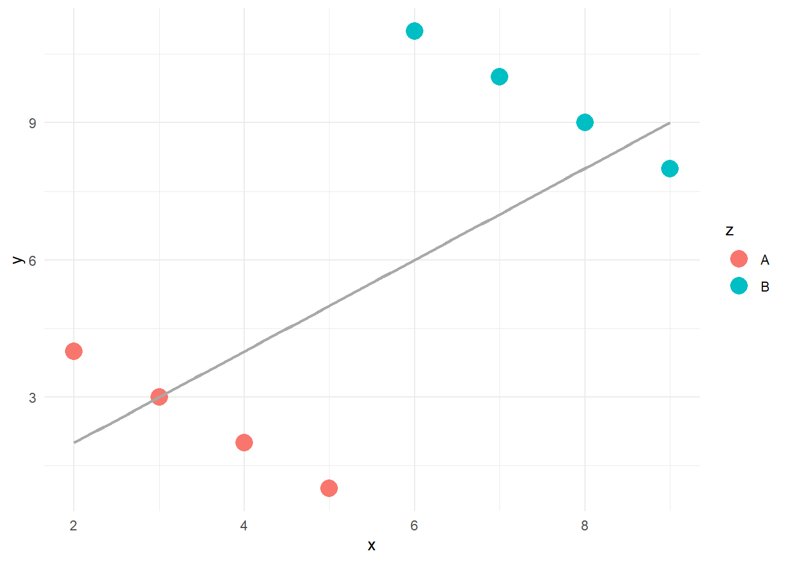
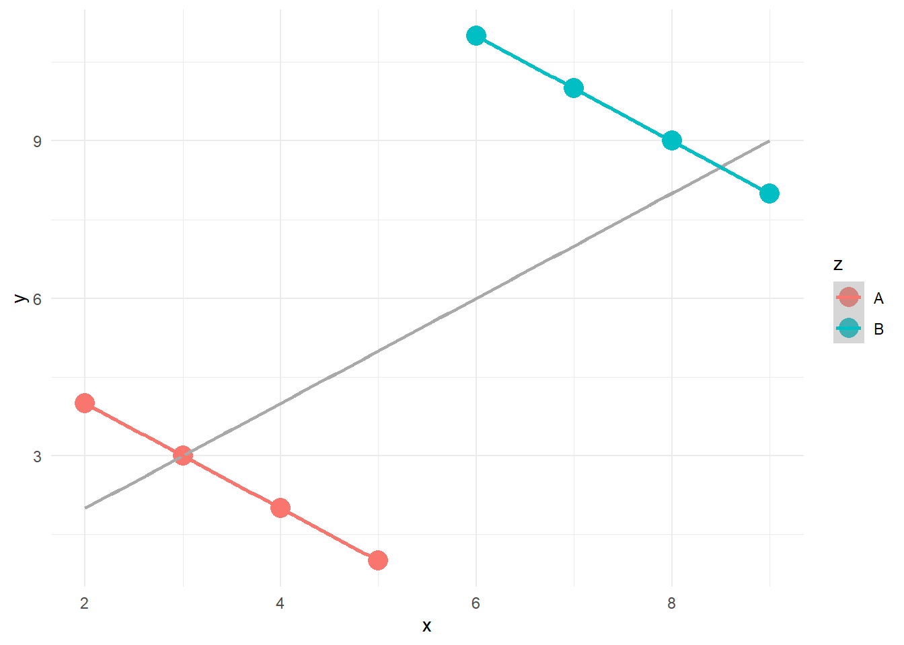

Bu derste temel amacımız, veri düzenleme ve özetleme tekniklerini uygulamalı olarak öğrenmektir.
Özellikle, değişkenler arasındaki ilişkileri incelerken verilerin farklı düzeylerde (toplam vs. alt gruplar) nasıl farklı görünebileceğini keşfedeceğiz.
Bu bağlamda Simpson Paradoksu ve verilerin uygun şekilde düzenlenip gruplanmaması durumunda nasıl yanıltıcı sonuçlara ulaşılabileceğini göstermesi açısından güçlü bir örnektir.
Anscombe’un Dörtlüsü ise, aynı özet istatistiklere sahip veri setlerinin görselleştirilmeden yanlış yorumlanabileceğini ortaya koyar.
Veri düzenlemenin önemi, sadece “doğru hesaplama” yapmak değil; aynı zamanda hangi değişkenlerin kontrol edilmesi gerektiğini fark ederek daha anlamlı sonuçlar çıkarmaktır.
🔎 Uygulamalar
Simpson Paradoksu (ucb_admit Örneği)
Genel oranlar ile alt grup oranlarını karşılaştırma
Simpson Paradoksu, bir gruptaki iki değişken arasındaki ilişkinin, alt gruplara bölündüğünde ortaya çıktığı, kaybolduğu veya tersine döndüğü istatistiksel bir olgudur.
Örneğin, iki değişken bir grupta pozitif ilişkili olabilir, ancak tüm alt gruplarda bağımsız veya hatta negatif ilişkili olabilir.
Paradoksu sergileyen vakalar matematik ve olasılık teorisi açısından problemsizdir, ancak yine de birçok insanı şaşırtmaktadır.
Bir ilişkiyi incelerken önemli bir değişkeni dikkate almamak Simpson paradoksu ile sonuçlanabilir.
Simpson paradoksu, açıklayıcı bir değişkenin ihmal edilmesinin, başka bir açıklayıcı değişken ile yanıt değişkeni arasındaki ilişkinin ölçüsü üzerinde yaratabileceği etkiyi göstermektedir.
Üçüncü bir değişkenin analize dahil edilmesi, diğer iki değişken arasındaki görünür ilişkiyi değiştirebilir
📦 Örnek Senaryo: Çok Değişkenli İlişkiler
Günlük alınan kalori miktarı ile kalp sağlığı arasındaki ilişkiyi düşündüğümüzde, bu iki değişkenin tek başına incelenmesi yanıltıcı olabilir. Çünkü kişinin yaşı ve fiziksel kondisyonu gibi başka faktörler de bu ilişkiyi etkiler.
👉 Gerçek dünyada değişkenler arasındaki ilişkiler genellikle çok boyutludur ve bu nedenle analizlerde birden fazla değişkeni dikkate almak gerekir.
1.0.1 Berkeley’deki cinsiyete dayalı kabul oranları:
“Berkeley’deki California Üniversitesi’ne 1973 sonbaharında yapılan lisansüstü kabullere ilişkin toplu veriler incelendiğinde, kadın başvuru sahiplerine karşı açık ama yanıltıcı bir önyargı örüntüsü görülmektedir.
Veriler altı bölümden gelmektedir. Gizlilik için bölümler A-F olarak kodlanmıştır.
Elimizde başvuru sahibinin kadın mı erkek mi olduğu ve kabul edilip edilmediğine dair bilgiler var.
İlk olarak, kabul edilen erkeklerin yüzdesinin genel olarak kadınlardan gerçekten daha yüksek olup olmadığını değerlendireceğiz. Daha sonra, her bölüm için aynı yüzdeyi hesaplayacağız.
library(openintro)
Warning: package 'openintro' was built under R version 4.4.3
Loading required package: airports
Warning: package 'airports' was built under R version 4.4.3
Loading required package: cherryblossom
Warning: package 'cherryblossom' was built under R version 4.4.3
Loading required package: usdata
Warning: package 'usdata' was built under R version 4.4.3
library(dplyr)
Warning: package 'dplyr' was built under R version 4.4.3
Attaching package: 'dplyr'
The following objects are masked from 'package:stats':
filter, lag
The following objects are masked from 'package:base':
intersect, setdiff, setequal, union
ucb_admit %>%count(gender)
ucb_admit %>%count(dept)
ucb_admit %>%count(admit)
Genel cinsiyet dağılımı hakkında ne söyleyebilirsiniz?
📌 İpucu: Aşağıdaki olasılıkları hesaplayın: \(P(Kabul | Erkek)\) ve \(P(Kabul | Kadın)\).
ucb_admit %>%count(gender, admit)
ucb_admit %>%count(gender, admit) %>%group_by(gender) %>%mutate(prop_admit = n /sum(n))
\(P(Kabul | Kadın)\) = 0.304
\(P(Kabul | Erkek)\) = 0.445
library(ggplot2)
Warning: package 'ggplot2' was built under R version 4.4.3
ggplot(ucb_admit, aes(y = gender, fill = admit)) +geom_bar(position ="fill") +labs(title ="Admit by gender",y =NULL, x =NULL)

Departmanlara göre cinsiyet dağılımı hakkında ne söyleyebilirsiniz?
ucb_admit %>%count(dept, gender, admit)
Veri setini uzun formattan geniş formata getirelim
Tabloya bakıldığında kadın öğrenciler, üniversitenin en büyük 6 bölümünün 4’ünde erkek öğrencilere göre daha fazla kabul almıştır. Yani A, B, D ve F bölümlerine kabul gören erkek sayısı kadın sayısına göre daha azdır. Şöyle ki erkekler en fazla öğrenci kabul edilen bölüme başvuruyu daha fazla yaparken kız öğrenciler ise en az öğrenci kabul edilen bölüme daha fazla başvuru yapmıştır. Bu sebeple grup yüzdeleri ile toplam yüzdeleri birbirinden farklılık göstermektedir. Konuyu pekiştirmek için başka bir örnekle devam edelim.
🔹 Genel olarak: Erkeklerin kabul edilme olasılığı daha yüksekti.
🔹 Çoğu bölüm içinde: Kadınların kabul edilme olasılığı daha yüksekti.
🔹 Bölüm etkisi kontrol edildiğinde: Cinsiyet ile kabul edilme durumu arasındaki ilişki tersine döndü.
📌 Olası neden:
Kadınlar, kabul oranı daha düşük olan rekabetçi bölümlere başvurma eğilimindeydi.
Erkekler ise, kabul oranı daha yüksek olan daha az rekabetçi bölümlere başvurma eğilimindeydi.
👉 Görüldüğü gibi, erkeklerin genel kabul oranı daha yüksek çıkmış olsa da bölüm bilgisi dikkate alındığında, çoğu bölümde kadınların kabul edilme olasılığı aslında daha yüksektir. Bu durumu Simpson paradoksu olarak adlandırıyoruz.
⚠️ Bu çelişkili bulguyu yalnızca başvurulan bölüm bilgisi analize eklendiğinde keşfedebildik. Bu tür örnekler, bir araştırmada yüzeyde ilgisiz gibi görünen ancak potansiyel olarak karıştırıcı (confounding) etkisi olabilecek değişkenlerin dikkate alınmasının ve toplanmasının önemini vurgular.
İki değişken arasındaki ilişki

`geom_smooth()` using method = 'loess' and formula = 'y ~ x'

Üç değişken arasındaki ilişki
`geom_smooth()` using formula = 'y ~ x'

`geom_smooth()` using formula = 'y ~ x'
`geom_smooth()` using formula = 'y ~ x'

2 Anscombe’un Dörtlüsü
anscombe_quartet veri setinin amacı, verilerinizi görselleştirmenin önemli olduğu noktasını vurgulamaya yardımcı olmaktır. Francis Anscombe bu dört veri setini, istatistiksel özet ölçümlerin tek başına iki değişken (burada x ve y) arasındaki tam ilişkiyi yakalayamayacağını göstermek için oluşturmuştur. Anscombe, özet istatistikleri hesaplamadan önce verileri görselleştirmenin önemini vurgulamıştır.
Veri seti 1, x ve y arasında doğrusal bir ilişkiye sahiptir
Veri Seti 2, x ve y arasında doğrusal olmayan bir ilişki olduğunu göstermektedir
Veri seti 3, x ve y arasında tek bir aykırı değer ile doğrusal bir ilişkiye sahiptir
Veri seti 4, etkili değer olarak işlev gören tek bir aykırı değer ile x ve y arasında hiçbir ilişki göstermemektedir.